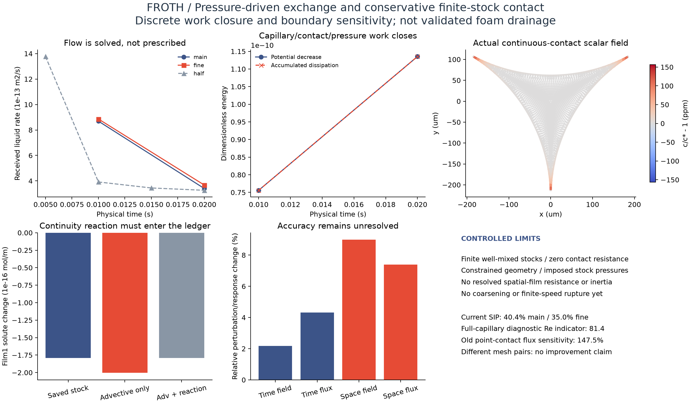

← FROTH 研究入口COMPUTED FLUX / PRESSURE-CONJUGATE WORK / FINITE STOCK CONTINUITY
流量成为未知量，
接触口回到同一本账。
从黏性耗散、界面化学功和几何表面能出发，求解三口交换流量与边界增长。本轮进一步区分了“离散收支正确”和“接触模型准确”：保留旧点式接触的失败水动力对照，并测试浓度连续、有限库存守恒的受控接触极限。
Q 由求解得到压力与表活状态共同影响交换，不输入目标流量
11 + 7连续接触的预定检查／保存数据与原生审计通过
58.9%同n192网格、同载荷、同0.02s，两种接触模型的流量差
这是有限、完全混合库存与运动截面的“零化学接触阻力”参考；不是空间膜剪切／接触过渡区的完整模型。形状仍受同形缩放约束，库存压力是外部测试载荷。完整排液、四泡／七泡动力学、粗化与有限速破裂尚未完成。

矢量PDF · 五组／11步与11项检查 · 7项保存数据与原生复核 · 当前模型、源码和版本 · 保留的九组点式接触参考及错误对照
压力、流动与表活怎样闭合
三个相对入口流量Q和内部速度一起求解。不可压流动的允许速度包含边界法向增长；实际流入量决定液体容量变化。毛细项来自真实截面界面周长及三片膜长度的表面能导数，不采用经验排液系数。三个原生Stokes速度模式仅用于选择Newton变量单位，物理解仍使用原黏性算子。
理想Henry界面、体相与有限库存共同参与化学能。原来留在外部约束中的接触口界面功，现在返回机械方程。固定压力载荷存在势能，扣除初始平衡参照后，受约束模型满足：
ΔΦ + D_BE + Δt(D_diff + D_upwind + D_visc,SIP) = residual
这里的Φ包括化学能、几何表面能和受控库存压力势能。平衡压力与表面能的大项采用精确代数合并，避免把小驱动力消掉；没有用能量残差反推修正液量或添加耗散。它是本受约束离散模型的账本，不能称作完整自由泡沫能量定理。
接触条件改变了什么
第一版只用上风交换连接均匀膜库存与截面，允许浓度在零长度接触口跳跃。加回共轭机械功后，14项离散检查和6项原生审计通过，却出现64.4%的场差、147.5%的流量差（n96/G1→n192/G3）。这提示零长度点式接触不适合直接充当定量膜阻力，不能靠能量检查掩盖。
新的对照选择完全混合有限库存、零化学接触阻力极限：每个入口的标量节点和对应库存共享同一个浓度未知量，各自实际容量相加，一起求解。体相扩散与对流都可把表活送入库存。浓度不是步后覆盖，也不是固定的无限浓度浴。
施加连续性所需的反力通量从未约束的节点收支方程恢复，并单独记入每张膜的库存。因两侧化学势相同，该约束的化学功为零；忽略这部分通量会使逐膜收支检查失败。所有膜的液体和表活库存只计一次。
在同一n192网格、相同载荷和0.02s终止时间，两种接触条件的流量相差58.9%。这是边界模型敏感性，不是实验验证，也不是同一模型的精度提升。连续接触不是所有真实膜—边界过渡区的普适条件；有限接触阻力、双界面剪切和真实膜厚分布仍需解析。
实际对照与数据
主／细网格为n192／288，保持G3端点和相同法向层规则；相对压力载荷为p₀+.01Pa。化学对照的三个压力相同，仅初始库存浓度为[1,1.0001,.9999]，得到一入一出的交换。每张网格使用自身几何对应的离散平衡p₀，故网格比较匹配相对载荷，并非完全相同的绝对压力。
结果的精度与物理边界
连续接触11步的总液体／表活误差约为舍入误差，入口浓度跳跃为零。保存数据重建了库存、压力势能、约束通量；独立原生速度／梯度积分核对了入口流量、界面功和三个广义压力／法向力。
仍未时空收敛：时间步减半后，浓度扰动场差2.18%、末态流量差4.32%；n192→288的共同内部场差8.98%、末态流量差7.39%。SIP数值面项占比约40.4%／35.0%，不能全部视为物理黏性。按冻结协议，本阶段到此停止加密。
旧模型把完整毛细压差直接施加到局部截面，给出峰值速度与边界半径定义的Re指标约81.4，超出预定0.1适用界限。它被保留为越界诊断，不是物理Stokes排液预测。需要真实膜阻力和适用的惯性模型，不能任意减小流量系数来让它过关。
材料仍是稀Henry诊断参数：r₀=.4mm，h₀=.8μm，η=10μm，D=5×10⁻¹⁰m²/s，μ=.001Pa·s，RT=2500J/mol，c*=.002mol/m³，单界面平衡张力.03N/m。它未与具体实验溶液标定；p₀是受控库存广义压力，不是此厚度平膜的实测法向压力。
失败记录与研究方向
首批压力矩阵全部轨迹已完成，但汇总碰到NumPy布尔序列化错误；仅从保存文件恢复汇总，未重跑轨迹。能量检查随后发现：在约75Pa支撑压力附近，约10⁻⁸Pa的绝对残差仍可能掩盖小驱动力的误差。保留原数据和源码ZIP，收紧内部求解后通过原有阈值；物理参数和验收门槛未放宽。省略端点机械功的负对照，能量误差超过门槛约958万倍。
点式接触的修正批次约217秒，连续接触5组约341秒，均为CPU求解；失败批次也保留，没有机器学习训练。后续将基于这个守恒接触基线接入共享膜网络，并处理真实膜阻力与法向形状，再连接CODA有限速液环吸收／动量和气体交换。通用压力端口、记忆、连续性和变分方法本身均不作为创新主张；有限速事件如何改变邻膜响应仍待检验。